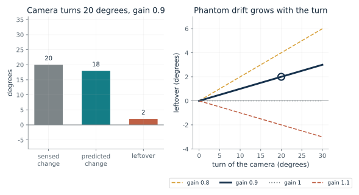
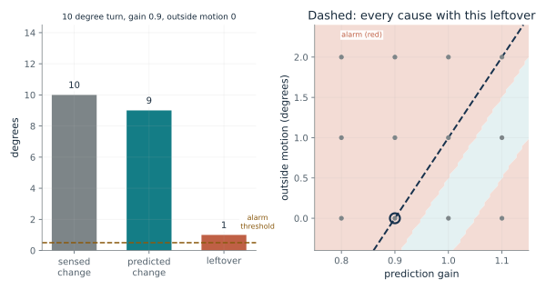
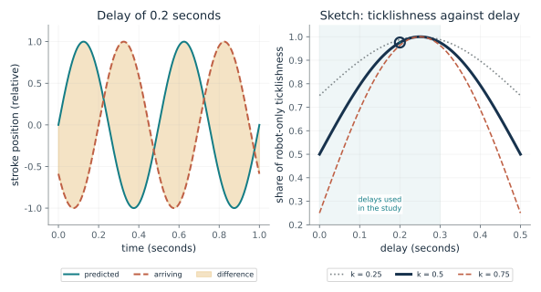
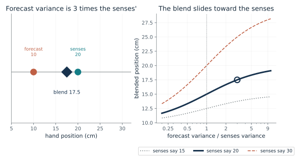
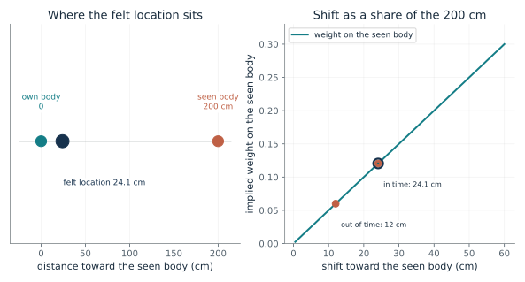
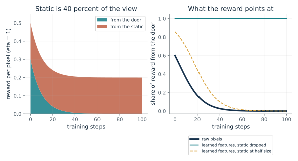

How much motion does a wrong prediction gain invent?
From Chapter 30, A fly with its head glued on upside down circled, lurched or froze
A camera turns while nothing outside moves. If its prediction of the turn is scaled wrong, how much phantom motion is left over?
The system holds a copy of its command and turns it into a predicted change. What the senses report minus that prediction is the leftover. If the gain is 0.9, ten percent of every turn is left over, so a bigger turn leaves a bigger leftover. Phantom drift is apparent motion left over when the gain is wrong.
Predict first: Turn the camera 20 degrees with prediction gain 0.9 and nothing moving outside. Predict the leftover.

Turn of the camera (degrees): 20 · Prediction gain: 0.9
What happens: The sensed change is 20, the prediction is 18, and the leftover is 2 degrees of apparent motion that never happened, twice the 1 degree at a 10 degree turn. At gain 1.0 it is zero, and at gain 1.1 the leftover turns negative.
Nothing outside moves, so the sensed change is 20. With prediction gain 0.9 the prediction is 18, and the leftover 2 degrees is motion that never happened. The leftover is 0.1 of the turn, so it grows in proportion to the movement.
- Sensed change (degrees)
- 20
- Predicted change (degrees)
- 18
- Leftover (degrees)
- 2
- Leftover reads as
- motion that never happened
A system that subtracts a prediction of its own move gets a leftover it must read. If the prediction is off, the leftover looks like the world.
The von Holst and Mittelstaedt scheme: a command sends an inner copy (the efference copy) whose sign opposes the returning report, so the two cancel. The head-turned fly was their example of a flipped sign. This is their proposed scheme, which the chapter presents as the authors' proposal.
The camera is a specification: this is what the leftover formula returns for a gain we chose. A real arm adds friction and model errors that can look like contact.
Show the calculation
e = s_obs - f(c) = 20 - 0.9 x 20 = 20 - 18 = 2.
The equations and symbols
- e
- the leftover: sensed minus predicted
- s_obs
- the sensed change after a movement, in degrees
- f(c)
- the predicted effect of command c: the expected change times the prediction gain
- w
- the outside change (here 0)
- rho(a)
- the real effect of the movement a (here equal to the turn)
Effects add and the senses report without noise, as the chapter states. The prediction gain is the multiplier on a command's expected effect, which a designer chose.
Check your understanding: A camera turns 30 degrees with prediction gain 0.8 and nothing moves outside. What is the leftover?
Book source: Chapter 30, A fly with its head glued on upside down circled, lurched or froze. Illustration C30-D01. Constructed example. Book formula and the chapter's constructed camera example (10 and 20 degree turns at gain 0.9 give leftovers of 1 and 2). The other turns and gains are the companion's variations. The chapter says the example is constructed, not data.
Can the leftover tell a collision from a bad prediction?
From Chapter 30, A fly with its head glued on upside down circled, lurched or froze
A system that flags contact when its leftover passes a threshold (here a camera, in degrees; a real arm compares torques) can be fooled. What else produces the same leftover?
The leftover is the outside change plus the effect of a wrong gain. For a 10 degree movement, the leftover is w + 10 (1 - g). Any pair of values on the dashed line gives the same leftover. A threshold turns the leftover into an alarm, but it cannot recover which cause was present, so it raises false alarms for a poor gain and misses contacts that are small.
Predict first: With gain 0.9 and no outside motion, predict the leftover and whether the alarm sounds with a threshold of 0.5.

Prediction gain: 0.9 · Outside motion (degrees): 0 · Alarm threshold (degrees): 0.5
What happens: The leftover is 1 degree, over the 0.5 threshold, so the alarm sounds although nothing touched the device: a false alarm. The same leftover arises from gain 1.0 with 1 degree of outside motion, where the alarm is correct.
A leftover of 1 (in degrees) passes the 0.5 degree threshold, so the alarm is raised; with outside motion 0 that is a false alarm. Many pairs of gain and outside motion give the same leftover, so the leftover alone cannot say which is true.
- Leftover (degrees)
- 1
- Alarm raised
- yes
- Outside motion present
- no
- Outcome
- false alarm
Something else must tell the causes apart. The chapter's proposal, its own and untested, is to show an operator both the prediction and the observation so a second sensor can be checked.
The chapter says ticklishness proposals do not show subtraction; this is an engineering contrast, not a claim about touch.
Collision detection by comparing commanded and expected torque is routine engineering, which the chapter attributes to a survey of 2017. Friction compensation and thresholds are its remedies for modeling errors.
Show the calculation
e = w + 10 (1 - g) = 0 + 10 x (1 - 0.9) = 1. Same leftover for gain 0.9 with no outside motion and gain 1 with 1 degree of it.
The equations and symbols
- e
- the leftover, in degrees
- w
- outside motion, in degrees
- g
- the prediction gain, applied to a 10 degree movement
- threshold
- the size of leftover that raises the alarm
One 10 degree movement, effects that add, and no sensor noise. The degrees and thresholds belong to this camera setup; a real arm compares commanded and expected torque, and linking its residual to phantom drift is the book's own step. A real arm's residual also carries friction and model errors the chapter says engineers handle with compensation and thresholds.
Check your understanding: With gain 1.0 and 1 degree of outside motion, the leftover is 1. Which gain with no outside motion gives the same leftover?
Book source: Chapter 30, A fly with its head glued on upside down circled, lurched or froze. Illustration C30-D02. Constructed example. The chapter's point that the same 1 degree leftover can come from a correctly predicted 10 degree turn plus 1 degree of outside motion, and that engineers add friction compensation and thresholds. The two thresholds and the outside motions are the companion's constructed values, and the chapter says the comparison with phantom drift is its own, not the survey's.
Why would a late touch feel more ticklish?
From Chapter 30, A touch the volunteers made themselves felt more ticklish when it arrived late
If a self-made touch is turned down in proportion to how well it matches a prediction, how should ticklishness change as the touch is delayed?
The prediction made from the movement is a stroke at the moment of the movement. The touch arrives d seconds late. At 2 strokes per second a 0.25 second delay is half a cycle, the worst possible match. A worse match gives a larger prediction error, so the touch is turned down less and feels more ticklish. The touch is turned down, not erased.
Predict first: At a delay of 0.1 seconds, predict whether the toy's ticklishness is above or below its value at 0.2 seconds, and whether it keeps rising after 0.3.

Delay (seconds): 0.2 · Turn-down of a matched touch (k): 0.5
What happens: At 0.2 seconds the prediction error is 0.951 of its largest value and ticklishness is 0.976 of the robot-only level, close to it. The study found ratings at 0.2 seconds not significantly different from robot-only, which is weaker than equal, and the 0.976 depends on the turn-down k = 0.5 chosen here. At 0.1 it is lower (0.794) and at 0.4 it falls back (0.794). The study did not test 0.4 or 0.5.
A 0.2 second delay shifts a 2 per second stroke by 144 degrees of its cycle, so the prediction error is 0.951 of its largest value. If the touch is turned down by 0.5 when it matches the prediction, the share of robot-only ticklishness is 0.976.
- Prediction error (share of its largest)
- 0.951
- Share of robot-only ticklishness
- 0.976
- Delay (seconds)
- 0.2
The ratings fit the proposal that prediction error drives ticklishness, but they do not show subtraction or measure self-attribution. A model that fits one range can say nothing safe outside it.
The authors propose a forward model that turns the command into a predicted sensation. The study recorded ratings, not brain activity, and two of 16 volunteers noticed the delays; the chapter says the scans in a separate study of six do not show subtraction either.
The sketch is a specification of what the proposal's arithmetic gives for a sinusoid. It is not a fit to data.
Show the calculation
Error = RMS of (sin(2 pi f t) - sin(2 pi f (t - d))) divided by sqrt(2) = |sin(pi f d)| = |sin(pi x 2 x 0.2)| = 0.951. Share = 1 - 0.5 x (1 - 0.951) = 0.976.
The equations and symbols
- d
- the delay between the hand's motion and the foam's, in seconds
- f
- strokes per second, 2 in the study
- error(d)
- root mean square of predicted minus arriving stroke, as a share of its largest value
- k
- how far a perfectly matched touch is turned down (below 1: turned down, not erased)
A sinusoidal stroke and a turn-down in proportion to the match, both the companion's choices. The mathematics of a brain is a model. The sketch also predicts a return to full turn-down at 0.5 seconds, a delay the study did not use, so it is a property of the sketch, not a finding.
Check your understanding: At a delay of 0.25 seconds and turn-down 0.5, what share of the robot-only ticklishness remains?
Book source: Chapter 30, A touch the volunteers made themselves felt more ticklish when it arrived late. Illustration C30-D03. Model. A model sketch built by the companion on the chapter's forward-model proposal: a stroke repeated twice a second, a prediction made from the movement and a touch arriving d seconds late. The study's ratings are not reproduced: the chapter gives no values, only that ticklishness rose from no delay to 0.2 seconds and that at 0.2 and 0.3 seconds it was not significantly different from the robot-only touch (16 volunteers, delays of 0.1, 0.2 and 0.3).
How should a forecast and the senses share a hand's position?
From Chapter 30, Stimulation gave a 43-year-old patient an out-of-body view of legs and lower trunk
A forecast from commands puts the hand at 10 cm and the senses put it at 20 cm. Where does the blend land?
Both numbers estimate the same position. The one with the smaller error variance gets more weight. The senses' weight is the forecast variance over the sum of the two. With equal variances each gets half. If the forecast is three times as noisy, the senses get three quarters of the weight, and the blend moves from 15 to 17.5.
Predict first: If the forecast has three times the variance of the senses, predict the weight on the senses and the blend.

Forecast variance / senses variance: 3 · Where the senses put the hand (cm): 20
What happens: The senses get weight three quarters and the blend is 17.5 cm. With equal variances (ratio 1) the blend is 15. The Kalman gain here is the share given to the senses, a different thing from the camera's prediction gain.
The forecast says 10 cm and the senses say 20 cm. With the forecast's variance 3 times the senses', the senses get weight 0.75 and the blend is 17.5 cm. This weight is the Kalman gain, not the prediction gain of the camera example.
- Weight on the senses (Kalman gain)
- 0.75
- Weight on the forecast
- 0.25
- Blended position (cm)
- 17.5
A person's sense of where the body is can be treated as an estimate, and an estimate can be pushed off. The chapter's studies show felt location can be shifted, not why.
A model: the chapter says engineering offers one way to model such an estimate. It does not show the brain runs this arithmetic.
A Kalman filter is a standard method that blends a forecast from commands with sensed feedback, weighted by reliability. Here the formula is a specification.
Show the calculation
Gain = 3/(3 + 1) = 0.75. Blend = 10 + 0.75 x (20 - 10) = 17.5.
The equations and symbols
- V
- error variance: the spread of errors, smaller means more reliable
- K
- the Kalman gain, the share given to the senses
- x-hat
- the blended position, in cm
Both estimate the same position, neither is systematically high or low, and their errors are uncorrelated, as the chapter assumes. The senses' variance is set to 1.
Check your understanding: The forecast has variance 9 times the senses' and the senses say 20. What is the blend?
Book source: Chapter 30, Stimulation gave a 43-year-old patient an out-of-body view of legs and lower trunk. Illustration C30-D04. Formula. The chapter's illustration with chosen numbers: a forecast at 10 cm, senses at 20 cm, equal variances giving 15 and a forecast with three times the variance giving 17.5. The other variance ratios and sensed positions are the companion's variations.
What would a shift in felt location mean as a weighting?
From Chapter 30, Stimulation gave a 43-year-old patient an out-of-body view of legs and lower trunk
After synchronous stroking, 14 people drifted about 24 cm toward a body seen 2 metres ahead. What weight on the seen body would a blend need?
If the felt location is a blend of the own body at 0 and the seen body at 200 cm, a shift of 24.1 cm means a weight of 24.1 over 200. The weight is the variance of the own estimate over the sum of the two variances, so the implied ratio is (1 minus w) over w. This turns a reported number into a modeling statement. The study makes no such statement.
Predict first: Predict the weight on the seen body that a 24 cm shift of a 200 cm gap would imply.

Shift toward the seen body (cm): 24.1
What happens: On the companion's blend reading (not a reported result), the weight is about 0.12, a variance ratio of about 7.3: the seen body would need about seven times the variance of the own-body estimate. The out-of-time shift of about 12 cm gives about 0.06, though it was not a reliable shift from baseline.
If the felt location were a blend of the own body (0 cm) and the seen body (200 cm), a shift of 24.1 cm would mean a weight of 0.121 on the seen body. This is the companion's reading, not the study's claim, and the 12 cm shift was not a reliable shift from baseline.
- Shift (cm)
- 24.1
- Implied weight on the seen body
- 0.121
- Implied variance ratio, seen body over own
- 7.3
A model can express a shift, but fitting a number is not an explanation. Blanke's patient was one person at one site, and Lenggenhager's stroking involved no command to move.
Stimulation at one site gave one patient a view of the legs and lower trunk from above; the chapter says the authors suggest a failure to combine body and balance signals. These are reports of experience and not measurements of a mechanism.
A specification: any blend gives a weight from a variance ratio. No machine here has these experiences.
Show the calculation
Weight = shift / 200 = 24.1/200 = 0.121. Variance ratio = (1 - w)/w = 7.3.
The equations and symbols
- shift
- the average drift toward the seen body, in cm
- w
- the weight on the seen body in a blend of own location (0) and seen body (200 cm)
- V_seen / V_own
- the variance ratio that a blend would need to give that weight
The felt location is treated as a blend of two points, with the shift as a fraction of the distance. The study's measure is where people walked back to, and the chapter says these studies show felt location can be shifted, not why. The study reports no group spread here, so none is shown. The shift values 0, 6, 36 and 48 cm on the slider are hypothetical; only 24.1 cm (in time) and 12 cm (out of time) are reported.
Check your understanding: For a 24.1 cm shift, what is the implied weight, to two decimal places?
Book source: Chapter 30, Stimulation gave a 43-year-old patient an out-of-body view of legs and lower trunk. Illustration C30-D05. Reported result with a constructed model reading. Reported shifts: Lenggenhager and colleagues' first study (14 people): about 24 cm closer to the seen body after stroking in time, about 12 cm out of time (not a reliable shift from baseline), the seen body two metres ahead. The weight (24.1/200 = 0.12) and the variance ratio (7.3) are not reported results: they are the companion's model reading, not the study's or the chapter's.
Why does an explorer rewarded for surprise need the right features?
From Chapter 30, An explorer paid for surprise worked despite noise it could not influence
An agent is paid for prediction error. What happens to its reward when part of its view is static it can never predict?
The reward grows with the squared miss of the forward model's prediction of the next features. Door pixels become predictable with training, so their part of the reward shrinks. Static stays unpredictable, so its part does not. If the features keep the static, the static eventually dominates the reward. If learning the features favors what the agent's actions explain, the static tends to drop out.
Predict first: With 40 percent static in raw pixels, predict whether the reward ever falls toward zero as the door becomes predictable.

Share of the view that is static: 0.4 · What the features keep: raw pixels
What happens: In raw pixels the reward settles at 0.2, all from the static, however long the agent trains: the curiosity trap. With learned features that drop the static, the reward falls toward zero as the door becomes predictable and everything left comes from the door.
With 40 percent static and raw pixels, the reward starts at 0.5 and is 0.2 at step 100. Static keeps the reward high however long the agent trains.
- Reward at step 0
- 0.5
- Reward at step 100
- 0.2
- Share from the door at step 100
- 6.81e-05
The chapter says the reward measures prediction error in learned features, not information gain. Whether the agent keeps exploring depends on what the features keep.
None. The paper does not mention brains, corollary discharge or monkeys.
The authors report the method still reached the goal with 40 percent of the view replaced by white noise, with a sparse external reward for reaching it. The chapter says that result is about noise the agent cannot affect.
Show the calculation
r = (eta/2) x (0.6 x e^(-2 t/20) + 0.4 x 1). At t = 100 the door part is 1.36e-05 and the static part is 0.2.
The equations and symbols
- phi(s)
- the learned features of a situation s
- phi-hat
- the forward model's prediction of the next features
- eta
- a positive scale, 1 here
- r_t
- the internal reward at step t
A one-line stand-in for the forward model: the door's error shrinks smoothly, the static's error stays at 1. The chapter says the learned features are not guaranteed to filter perfectly. A simulation here is a computation with a fixed formula, not a measurement of any agent.
Check your understanding: With 40 percent static in raw pixels and eta = 1, what reward remains from the static at any step?
Book source: Chapter 30, An explorer paid for surprise worked despite noise it could not influence. Illustration C30-D06. Simulation. The reward formula of Pathak and colleagues (2017) as the chapter prints it. The room with static and a door follows the chapter's constructed picture. The decay time of 20 steps, the static fraction and the half-size static are the companion's invented values; the paper's maze test with 40 percent white noise is reported only in words.
Mathematical illustrations use the book's formulas with disclosed small examples. Each interactive choice shows a result computed from the same calculations as the chapter notebook. A simulation is not a measurement, and for a brain the mathematics is a model: a picture illustrates a result, and the assumptions determine its scope. Review copy, brain-computer partnership revision of 1 november 2026.